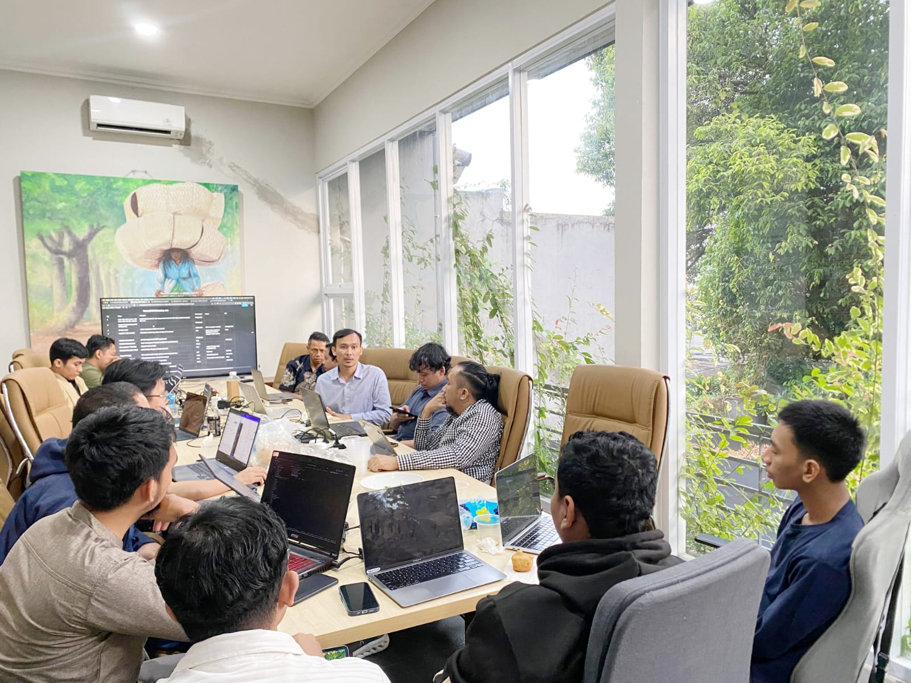

A dedicated Quality Assurance Professional with 3+ years of experience in banking & fintech industry. Specialized in functional testing, test case design, and bug tracking. Currently serving as Lead QA & Technical Writer.

My name is Novry Jhonatan, a Computer Science graduate with over three years of experience in Quality Assurance and more than two years of experience in the banking industry. I have strong expertise in system testing (functional, regression, UAT), defect management, and leading QA & TW teams.
Currently, I work as a Quality Assurance at PT Neural Technologies Indonesia, serving as Lead QA and Technical Writer. I am passionate about ensuring software quality and love collaborating with cross-functional teams.
Lead QA & TW Team
Cross-functional
QA Experience
PT Neural Technologies Indonesia (Jakarta)
PT Bank Syariah Indonesia (Jakarta)
PT Bank Tabungan Negara (Jakarta)
PT Bank Artha Graha Internasional (Jakarta)
Universitas Putra Indonesia "YPTK" Padang
2017 – 2021GPA: 3.34
SMKN 3 Kota Bengkulu
2014 – 2017UN Average: 73.64
Member
2017 – 2018
Member of Information Engineering activities
Member
2018 – 2021
Creating learning activities for IT understanding
Feel free to reach out for collaboration or just to say hi!